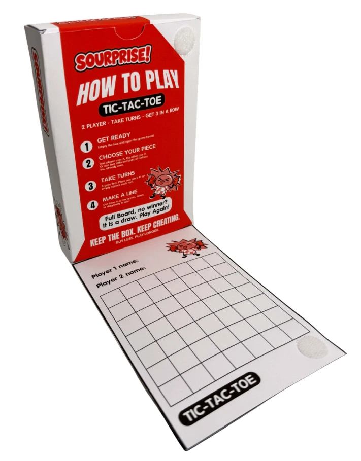

An expressive visual identity
Red, black, and white graphics, bold lettering, and a reacting character translate the intensity of sour candy into the package’s visual language.
Packaging design / SOURPRISE!
A sour-candy packaging concept that unfolds into a game—giving people a reason to keep the box.
Read the case study
01 / The challenge
This project explores the short useful life of candy packaging. Once the candy is gone, the container often has no planned next use. I wanted to build a second activity into the package itself.
The starting product was Warheads Extreme Sour Hard Candy, Mystery Flavor, in a 1.5 oz (42 g) package. My redesign introduces SOURPRISE!, a concept that pairs the energy of sour candy with a fold-out game.
The intended users are sour-candy fans who enjoy sharing a small, playful activity with someone else. This is a design hypothesis; the project documentation does not establish a tested age group or customer segment.
The goal is to encourage reuse. Actual reuse rates and environmental benefits have not been measured.
02 / My contribution
I developed the project through product photography and investigation, a moodboard, original and refined sketches, vector layouts, and printed packaging prototypes.
Warheads is the original assigned product. SOURPRISE! and BUY LESS are presented here as student concepts, not an official Warheads redesign or commercial collaboration.
03 / Design decisions
Red, black, and white graphics, bold lettering, and a reacting character translate the intensity of sour candy into the package’s visual language.
A panel unfolds into a game surface. The concept gives the box an activity beyond storage, rather than relying only on a message asking people to keep it.
“Box becomes a game” and “Keep the box. Keep creating.” introduce the second use. Instructions inside explain the intended two-player interaction.
These are design intentions. Shelf recognition, comprehension, and willingness to reuse need to be tested.
04 / Iteration
My process documentation shows a progression from multiple sketches to refined concepts, several vector layouts, and three levels of printed prototypes. The final package combines the candy identity, product information, and the fold-out game in one object.
Specific feedback comments and user-test findings are not recorded in my process documentation. I can show the design iterations, but cannot attribute individual changes to a particular critique or claim that testing proved the concept works.
01 / Original sketches
Initial sketches explore different package structures and compositions before the final direction is developed.
Select the image to see it larger.
Printed prototypes demonstrate that the design was physically explored. They do not establish opening ease, game comprehension, long-term durability, or customer preference.
The final design
Actual photographs of the completed packaging prototype.
05 / Outcome & limits
I completed a printed candy packaging concept with an integrated fold-out game, supported by sketches, vector artwork, and photographed prototypes. The work connects graphic identity, physical structure, and an intended post-purchase interaction.
Original and refined sketches, vector iterations, low-, mid-, and high-fidelity packaging, and final photographs.
No measured reuse rate, waste reduction, sales effect, game-comprehension results, shelf study, food-contact assessment, or production cost analysis.
Product information shown in the student artwork is not evidence of regulatory approval or production readiness. The concept does not establish an environmental benefit simply because it offers a second use.
Next steps